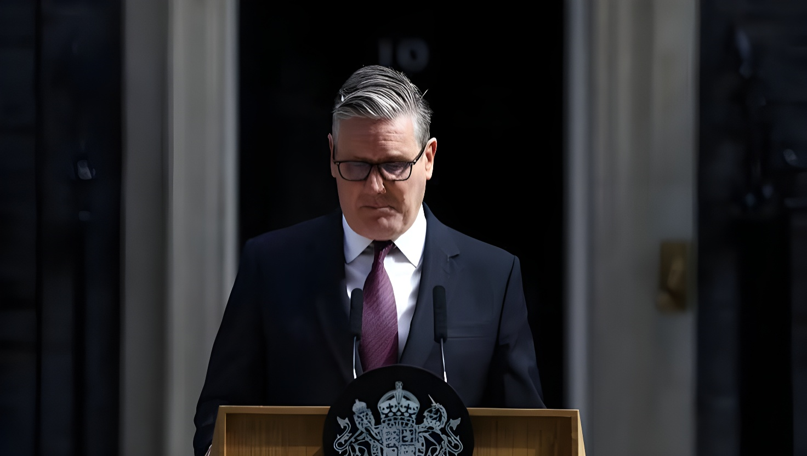

Le 22 juin 2026, Keir Starmer a annoncé sa démission de Premier ministre et de chef du Parti travailliste, cédant à la pression de ses propres députés après une série de revers électoraux. Andy Burnham, ancien maire du Grand Manchester, fait figure de favori incontesté pour lui succéder à Downing Street.
Le lundi 22 juin 2026, devant le 10 Downing Street, Keir Starmer a annoncé qu'il quittait ses fonctions de Premier ministre et de chef du Parti travailliste. « La question que mon parti se pose désormais est de savoir si je suis le mieux placé pour le conduire jusqu'aux prochaines élections générales. J'ai entendu la réponse de mon groupe parlementaire à cette question, et je l'accepte avec grâce », a-t-il déclaré, la voix nouée par l'émotion alors qu'il évoquait le soutien de son épouse Victoria et de leurs deux enfants. Il a précisé avoir informé le roi Charles III de sa décision dès le matin même.
Starmer a indiqué qu'il resterait Premier ministre par intérim jusqu'à la désignation d'un successeur, afin d'assurer une transition « ordonnée et responsable ». Les candidatures à la direction du Parti travailliste s'ouvriront le 9 juillet et se clôtureront le 16 juillet, date de la suspension estivale du Parlement. En l'absence de candidat rival, un nouveau chef pourrait être investi dès la fin juillet ; en cas de contestation, le scrutin devrait être achevé avant le 1ᵉʳ septembre.
Cette démission intervient après plusieurs mois de pression croissante au sein du Parti travailliste. Les élections locales du début mai 2026, marquées par une percée historique du parti Reform UK de Nigel Farage et par la perte de plus de mille sièges dans les conseils municipaux, ont été interprétées comme un désaveu massif de l'action gouvernementale. Le coup décisif est venu la semaine précédente, lorsque le secrétaire à la Défense John Healey, pourtant loyal à Starmer, a démissionné en raison de désaccords sur les plans de dépenses militaires, suivi du ministre des Forces armées Al Carns. Au total, une vingtaine de ministres ont quitté le gouvernement Starmer depuis son arrivée au pouvoir.
L'élément qui a précipité le calendrier de la démission de Starmer est la victoire d'Andy Burnham, ancien maire du Grand Manchester pendant près d'une décennie, lors d'une élection partielle organisée le 18 juin 2026 dans la circonscription de Makerfield, près de Manchester. Pour s'y présenter, Burnham avait quitté ses fonctions de maire, un siège de député étant nécessaire pour pouvoir prétendre à la direction du Parti travailliste et donc à Downing Street. Il a remporté ce scrutin avec 55 % des voix, devançant le candidat de Reform UK de plus de 9 200 voix — une victoire plus large qu'attendu face à la progression du parti de Farage.
Surnommé le « roi du Nord » pour sa défense constante des intérêts du nord de l'Angleterre, Burnham s'est immédiatement déclaré candidat à la succession : « Je me porterai candidat dans le cadre de ce processus », a-t-il affirmé. Son principal rival potentiel, l'ancien secrétaire à la Santé Wes Streeting — qui avait lui-même démissionné du gouvernement en mai en signe de protestation contre les résultats électoraux — a annoncé qu'il soutiendrait sa candidature, ouvrant la voie à une succession sans véritable contestation interne.
Conformément aux règles du Parti travailliste, seuls les députés siégeant à la Chambre des communes peuvent prétendre à sa direction. Si Andy Burnham reste seul candidat à l'issue de la période de candidatures, il sera automatiquement désigné chef du parti, et donc Premier ministre. En cas de candidatures multiples, l'élection se déroulera selon un scrutin préférentiel ouvert à tout adhérent du parti depuis au moins six mois, avec élimination successive des candidats arrivés en dernière position jusqu'à l'obtention d'une majorité absolue. Une fois le nouveau chef désigné, Starmer démissionnera formellement auprès du roi Charles III, qui invitera alors le nouveau dirigeant du Labour à former un gouvernement.
La cheffe de l'opposition conservatrice, Kemi Badenoch, a vivement critiqué le bilan de Starmer, le qualifiant de « terrible Premier ministre », et a dénoncé le délai retenu pour désigner son successeur : « Le pays n'est plus gouverné, et le Labour annonce qu'il n'y aura pas de Premier ministre avant septembre. » Nigel Farage, leader de Reform UK, a quant à lui réclamé la tenue d'élections générales anticipées — une demande sans fondement juridique contraignant, le scrutin n'étant pas obligatoire avant 2029.
Sur la scène internationale, plusieurs alliés du Royaume-Uni ont salué le rôle joué par Starmer, notamment son soutien constant à l'Ukraine et ses efforts pour renouer les liens entre Londres et l'Union européenne après le Brexit. Le président ukrainien Volodymyr Zelensky l'a notamment remercié sur les réseaux sociaux pour sa coopération.
Keir Starmer mène le Labour à une victoire électorale écrasante, mettant fin à 14 ans de pouvoir conservateur.
Élections locales catastrophiques pour le Labour, qui perd plus de 1 000 sièges ; percée historique de Reform UK.
Démission de Wes Streeting du poste de secrétaire à la Santé, en signe de protestation.
Démissions du secrétaire à la Défense John Healey et du ministre des Forces armées Al Carns sur fond de désaccords budgétaires.
Andy Burnham remporte l'élection partielle de Makerfield avec 55 % des voix.
Keir Starmer annonce sa démission devant le 10 Downing Street.
Période de dépôt des candidatures à la direction du Parti travailliste.
Date limite pour la désignation du nouveau chef du Labour et Premier ministre.
« Chaque décision que j'ai prise l'a été dans l'intérêt du pays que j'aime. C'est pourquoi je démissionne. »
— Keir Starmer, déclaration, Downing Street, 22 juin 2026La chute de Keir Starmer illustre une fragilité désormais structurelle du système politique britannique : il devient le sixième Premier ministre à démissionner devant Downing Street en sept ans, et son successeur sera le septième chef de gouvernement en une décennie. Plusieurs analystes relient cette instabilité aux conséquences économiques persistantes du Brexit, dont le dixième anniversaire du référendum tombait justement le lendemain de l'annonce. Au-delà du cas Starmer, cette succession rapide de dirigeants interroge la capacité du système parlementaire britannique à offrir une gouvernance stable, alors que la progression de Reform UK rebat les cartes électorales et que l'arrivée probable d'Andy Burnham, figure plus à gauche que son prédécesseur, pourrait marquer une réorientation du Labour pour tenter d'enrayer cette dynamique avant les élections générales attendues en 2029.
On 22 June 2026, Keir Starmer announced his resignation as Prime Minister and leader of the Labour Party, yielding to mounting pressure from his own MPs after a string of electoral setbacks. Andy Burnham, the former Mayor of Greater Manchester, is the overwhelming favourite to succeed him at Downing Street.
On Monday 22 June 2026, outside 10 Downing Street, Keir Starmer announced he was stepping down as Prime Minister and leader of the Labour Party. "The question my party is asking now is whether I am best placed to lead us into the next general election. I have heard the answer of my parliamentary party to that question, and I accept that answer with good grace," he said, his voice choked with emotion as he spoke of the support of his wife Victoria and their two children. He confirmed he had informed King Charles III of his decision earlier that morning.
Starmer said he would remain caretaker Prime Minister until a successor is chosen, to ensure an "orderly and responsible" transition. Nominations for the Labour leadership will open on 9 July and close on 16 July, when Parliament rises for the summer recess. If no rival candidate emerges, a new leader could take office as early as late July; if there is a contest, the process is expected to conclude by 1 September.
The resignation follows months of mounting pressure within the Labour Party. The local elections of early May 2026, which saw a historic breakthrough for Nigel Farage's Reform UK and the loss of more than a thousand council seats, were widely seen as a sweeping repudiation of the government's record. The decisive blow came the previous week, when Defence Secretary John Healey, a Starmer loyalist, resigned over disagreements on military spending plans, followed by Armed Forces Minister Al Carns. In total, around twenty ministers left the Starmer government during his tenure.
The trigger that accelerated Starmer's timeline was Andy Burnham's victory, the former Mayor of Greater Manchester for nearly a decade, in a by-election held on 18 June 2026 in the Makerfield constituency near Manchester. To stand, Burnham had to give up the mayoralty, since only sitting MPs are eligible for the Labour leadership and therefore for Downing Street. He won with 55% of the vote, more than 9,200 votes ahead of the Reform UK candidate — a wider margin than expected given the party's recent surge.
Nicknamed the "King of the North" for his consistent advocacy for northern England, Burnham immediately declared his candidacy: "I will put myself forward as part of this process," he said. His main potential rival, former Health Secretary Wes Streeting — who had himself resigned from government in May in protest at the election results — said he would back Burnham's bid, clearing the way for a largely uncontested succession.
Under Labour Party rules, only sitting Members of Parliament are eligible for the leadership. If Andy Burnham remains the sole candidate once nominations close, he will automatically become Labour leader, and therefore Prime Minister. Should multiple candidates stand, the contest will be decided by a preferential ballot open to any party member of at least six months' standing, with the lowest-placed candidates eliminated until one secures an absolute majority. Once a new leader is chosen, Starmer will formally resign to King Charles III, who will then invite the new Labour leader to form a government.
Conservative opposition leader Kemi Badenoch sharply criticised Starmer's record, calling him a "terrible prime minister," and condemned the timetable for choosing his successor: "The country is not being governed, and Labour say there won't be a Prime Minister till September." Reform UK leader Nigel Farage called for an early general election — a demand with no binding legal basis, since a vote is not required before 2029.
Internationally, several of the UK's allies paid tribute to Starmer's record, particularly his consistent support for Ukraine and his efforts to rebuild ties between London and the European Union after Brexit. Ukrainian President Volodymyr Zelenskyy thanked him on social media for his cooperation.
Keir Starmer leads Labour to a landslide election victory, ending 14 years of Conservative rule.
Disastrous local elections for Labour, which loses more than 1,000 council seats; historic breakthrough for Reform UK.
Wes Streeting resigns as Health Secretary in protest.
Defence Secretary John Healey and Armed Forces Minister Al Carns resign amid budget disagreements.
Andy Burnham wins the Makerfield by-election with 55% of the vote.
Keir Starmer announces his resignation outside 10 Downing Street.
Nomination window for the Labour leadership.
Deadline for naming the new Labour leader and Prime Minister.
"Every decision I have taken has been about putting the country I love first. That is why I will resign."
— Keir Starmer, statement, Downing Street, 22 June 2026Keir Starmer's fall illustrates a now-structural fragility in the British political system: he becomes the sixth Prime Minister to resign outside Downing Street in seven years, and his successor will be the seventh head of government in a decade. Several analysts link this instability to the lasting economic consequences of Brexit, whose tenth referendum anniversary fell just a day after the announcement. Beyond Starmer's individual case, this rapid succession of leaders raises questions about the British parliamentary system's capacity to deliver stable governance, as Reform UK's rise reshapes the electoral landscape and the likely arrival of Andy Burnham — a figure further to the left than his predecessor — could mark a repositioning of Labour ahead of the general election expected in 2029.